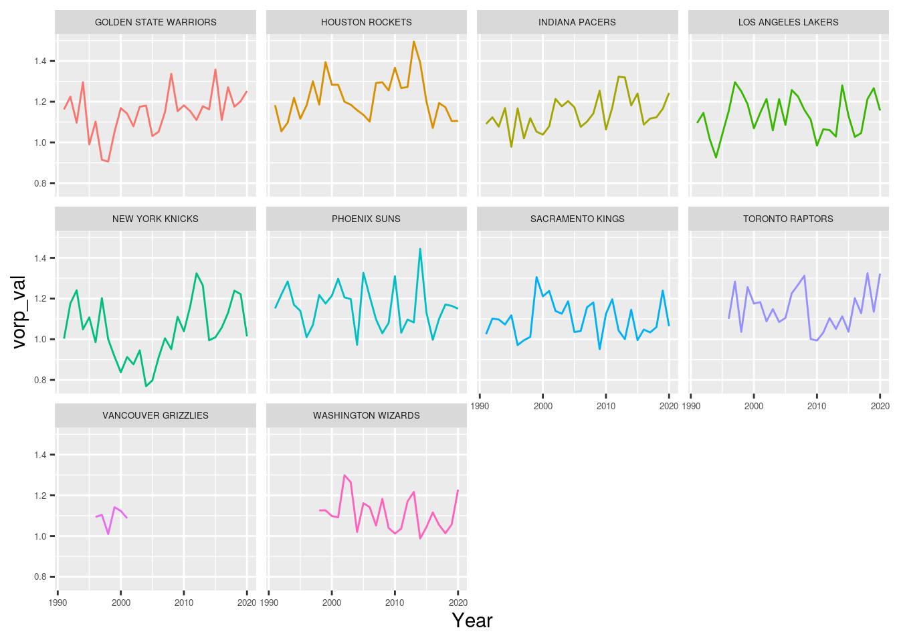
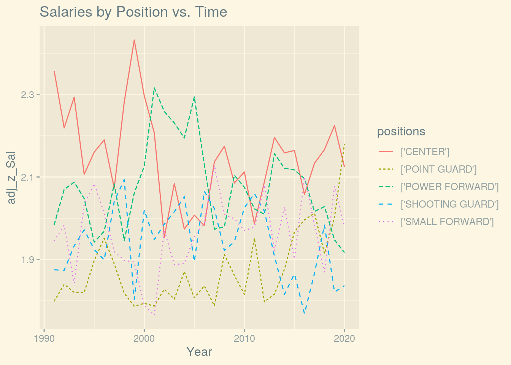

January 1, 0001
Braeden Conrad (bsc875)
Understanding the Value of NBA Players through History
Introduction
I was able to find two data sets by using Python to scrape from basketballreference and HoopsHype. The first data set is all of the advanced statistics for every player since 1990. The second data set is all of the salaries for those players since 1990. In combining these two data sets, we hope to identify the best and worst value players/teams and trends since 1990. This analysis will not try to give insight on who is the best, but which teams are getting the best value out of their money.
Information on the advanced statistics data is on the page for 2020. Here is salary data for 2020. You can look at previous seasons by adding /{year} endpoint to the end.
The main variables of concern are the player name, team, year, box plus minus, win shares, and value over replacement player. Box plus minus(BPM) estimates the points contributed by a player per 100 possessions, relative to an average player, translated to an average team. Win shares estimates the number of wins the player has contributed to their team. Value over replacement player (VORP) estimates the points per 100 team possessions relative to a replacement level player translated to an average team.
I expect that the highest value players and teams will be young, because they could have a high amount of talent but still be in a contract that is low. It will be interesting to see the older players that ended up being good values. I expect those that were paid super high relative to their peers (Michael Jordan) will never be listed as a good value despite being one of the best. ### Tidying This includes everything that had to be done before the join.
library(tidyverse)
library(cluster)Need to remove one column from both, adjust the year column on the salaries data set, and get rid of foreign characters in the advanced stats to make sure join works correctly.
Need to manually fix players that have names that appear differently in the data sets due to nicknames, different spelling. I only did the ones in the top 3000 or special cases such as "Jr" and "III". This unfortunately had to be done since salaries data set does not have a unique player identifier like slug that is present in the advanced stats data set.
# have to add 1 to year, because it marks it by the beginning
# year
salaries <- read.csv("player_salaries_1991-2020.csv") %>% select(-X) %>%
mutate(Year = Year + 1)
adv_stats <- read.csv("adv_stats_1991-2020.csv") %>% select(-X)
# this line accounts for foreign names not matching salary
# data names
adv_stats$name <- iconv(adv_stats$name, from = "UTF-8", to = "ASCII//TRANSLIT")
# only alpha-numeric
adv_stats$name <- gsub("[^[:alnum:][:space:]]", "", adv_stats$name)
salaries$Player <- gsub("[^[:alnum:][:space:]]", "", salaries$Player)
# manually fix players that were in the top 5000 players
salaries$Player <- gsub("[Ã]", "e", salaries$Player)
salaries$Player[endsWith(salaries$Player, "Stojakovic")] <- "Peja Stojakovic"
salaries$Player[endsWith(salaries$Player, "Turkoglu")] <- "Hedo Turkoglu"
salaries$Player[salaries$Player == "Louis Williams"] <- "Lou Williams"
salaries$Player[salaries$Player == "Maurice Williams"] <- "Mo Williams"
salaries$Player[salaries$Player == "Patrick Mills"] <- "Patty Mills"
salaries$Player[salaries$Player == "Dennis Schroeder"] <- "Dennis Schroder"
salaries$Player[salaries$Player == "Jose Juan Barea"] <- "JJ Barea"
# fix players with 'Jr' at end of name
adv_stats$name[endsWith(adv_stats$name, "Jr")] <- gsub(" Jr",
"", adv_stats$name[endsWith(adv_stats$name, "Jr")])
# fix players with 'III' at end of name
adv_stats$name[endsWith(adv_stats$name, "III")] <- gsub(" III",
"", adv_stats$name[endsWith(adv_stats$name, "III")])Data sets are already tidy, so will mess them up and then tidy them again.
# untidy and tidy advanced stats
unTidy_adv <- adv_stats %>% pivot_wider(names_from = Year, values_from = name)
head(unTidy_adv)## # A tibble: 6 x 57
## age assist_percenta… block_percentage box_plus_minus defensive_box_p…
## <int> <dbl> <dbl> <dbl> <dbl>
## 1 22 5.8 2.5 -4.6 -1.2
## 2 21 19.2 0.1 -5 -3
## 3 28 2.5 1.1 -3 -0.2
## 4 28 39.4 0.1 5.3 -0.7
## 5 31 11.6 0.6 1.4 0.2
## 6 31 23.8 0.5 3.7 0.9
## # … with 52 more variables: defensive_rebound_percentage <dbl>,
## # defensive_win_shares <dbl>, free_throw_attempt_rate <dbl>,
## # games_played <int>, is_combined_totals <fct>, minutes_played <int>,
## # offensive_box_plus_minus <dbl>, offensive_rebound_percentage <dbl>,
## # offensive_win_shares <dbl>, player_efficiency_rating <dbl>,
## # positions <fct>, slug <fct>, steal_percentage <dbl>, team <fct>,
## # three_point_attempt_rate <dbl>, total_rebound_percentage <dbl>,
## # true_shooting_percentage <dbl>, turnover_percentage <dbl>,
## # usage_percentage <dbl>, value_over_replacement_player <dbl>,
## # win_shares <dbl>, win_shares_per_48_minutes <dbl>, `1991` <chr>,
## # `1992` <chr>, `1993` <chr>, `1994` <chr>, `1995` <chr>, `1996` <chr>,
## # `1997` <chr>, `1998` <chr>, `1999` <chr>, `2000` <chr>, `2001` <chr>,
## # `2002` <chr>, `2003` <chr>, `2004` <chr>, `2005` <chr>, `2006` <chr>,
## # `2007` <chr>, `2008` <chr>, `2009` <chr>, `2010` <chr>, `2011` <chr>,
## # `2012` <chr>, `2013` <chr>, `2014` <chr>, `2015` <chr>, `2016` <chr>,
## # `2017` <chr>, `2018` <chr>, `2019` <chr>, `2020` <chr>tidy_adv <- unTidy_adv %>% pivot_longer(28:57, names_to = "Year",
values_to = "name")
tidy_adv <- na.omit(tidy_adv)
head(tidy_adv)## # A tibble: 6 x 29
## age assist_percenta… block_percentage box_plus_minus defensive_box_p…
## <int> <dbl> <dbl> <dbl> <dbl>
## 1 22 5.8 2.5 -4.6 -1.2
## 2 21 19.2 0.1 -5 -3
## 3 28 2.5 1.1 -3 -0.2
## 4 28 39.4 0.1 5.3 -0.7
## 5 31 11.6 0.6 1.4 0.2
## 6 31 23.8 0.5 3.7 0.9
## # … with 24 more variables: defensive_rebound_percentage <dbl>,
## # defensive_win_shares <dbl>, free_throw_attempt_rate <dbl>,
## # games_played <int>, is_combined_totals <fct>, minutes_played <int>,
## # offensive_box_plus_minus <dbl>, offensive_rebound_percentage <dbl>,
## # offensive_win_shares <dbl>, player_efficiency_rating <dbl>,
## # positions <fct>, slug <fct>, steal_percentage <dbl>, team <fct>,
## # three_point_attempt_rate <dbl>, total_rebound_percentage <dbl>,
## # true_shooting_percentage <dbl>, turnover_percentage <dbl>,
## # usage_percentage <dbl>, value_over_replacement_player <dbl>,
## # win_shares <dbl>, win_shares_per_48_minutes <dbl>, Year <chr>, name <chr># untidy and tidy salaries
unTidy_sal <- salaries %>% pivot_wider(names_from = Year, values_from = Salary)
unTidy_sal %>% glimpse()## Rows: 2,597
## Columns: 31
## $ Player <chr> "Patrick Ewing", "Hot Rod Williams", "Hakeem Olajuwon", "Charl…
## $ `1991` <list> ["$4,250,000", "$3,785,000", "$3,175,000", "$2,900,000", "$2,…
## $ `1992` <list> ["$3,139,000", "$3,786,000", "$3,170,000", "$3,200,000", "$2,…
## $ `1993` <list> ["$3,300,000", "$3,786,000", "$3,170,000", "$2,420,000", "$2,…
## $ `1994` <list> ["$3,825,000", NULL, "$3,170,000", "$3,250,000", "$2,844,000"…
## $ `1995` <list> ["$4,486,700", NULL, "$3,169,900", "$4,030,000", "$2,844,000"…
## $ `1996` <list> ["$18,724,000", NULL, "$5,305,000", "$4,760,000", "$2,844,000…
## $ `1997` <list> ["$3,000,000", NULL, "$9,655,000", "$4,695,000", "$2,844,000"…
## $ `1998` <list> ["$20,500,000", NULL, "$11,156,000", "$2,250,000", "$2,941,50…
## $ `1999` <list> ["$18,500,000", NULL, "$12,943,000", "$1,000,000", "$3,510,00…
## $ `2000` <list> ["$15,000,000", "$1,925,000", "$14,302,001", "$9,000,000", "$…
## $ `2001` <list> ["$14,000,000", NULL, "$16,700,000", NULL, "$4,650,000", NULL…
## $ `2002` <list> ["$2,118,420", NULL, "$5,061,539", NULL, NULL, NULL, "$1,000,…
## $ `2003` <list> ["$1,850,000", NULL, "$5,694,231", NULL, NULL, NULL, "$4,546,…
## $ `2004` <list> [NULL, NULL, "$6,326,923", NULL, NULL, NULL, NULL, NULL, NULL…
## $ `2005` <list> [NULL, NULL, NULL, NULL, NULL, NULL, NULL, NULL, NULL, NULL, …
## $ `2006` <list> [NULL, NULL, NULL, NULL, NULL, NULL, NULL, NULL, NULL, NULL, …
## $ `2007` <list> [NULL, NULL, NULL, NULL, NULL, NULL, NULL, NULL, NULL, NULL, …
## $ `2008` <list> [NULL, NULL, NULL, NULL, NULL, NULL, NULL, NULL, NULL, NULL, …
## $ `2009` <list> [NULL, NULL, NULL, NULL, NULL, NULL, NULL, NULL, NULL, NULL, …
## $ `2010` <list> [NULL, NULL, NULL, NULL, NULL, NULL, NULL, NULL, NULL, NULL, …
## $ `2011` <list> [NULL, NULL, NULL, NULL, NULL, NULL, NULL, NULL, NULL, NULL, …
## $ `2012` <list> [NULL, NULL, NULL, NULL, NULL, NULL, NULL, NULL, NULL, NULL, …
## $ `2013` <list> [NULL, NULL, NULL, NULL, NULL, NULL, NULL, NULL, NULL, NULL, …
## $ `2014` <list> [NULL, NULL, NULL, NULL, NULL, NULL, NULL, NULL, NULL, NULL, …
## $ `2015` <list> [NULL, NULL, NULL, NULL, NULL, NULL, NULL, NULL, NULL, NULL, …
## $ `2016` <list> [NULL, NULL, NULL, NULL, NULL, NULL, NULL, NULL, NULL, NULL, …
## $ `2017` <list> [NULL, NULL, NULL, NULL, NULL, NULL, NULL, NULL, NULL, NULL, …
## $ `2018` <list> [NULL, NULL, NULL, NULL, NULL, NULL, NULL, NULL, NULL, NULL, …
## $ `2019` <list> [NULL, NULL, NULL, NULL, NULL, NULL, NULL, NULL, NULL, NULL, …
## $ `2020` <list> [NULL, NULL, NULL, NULL, NULL, NULL, NULL, NULL, NULL, NULL, …tidy_sal <- unTidy_sal %>% pivot_longer(2:31, names_to = "Year",
values_to = "Salary")
tidy_sal$Salary <- as.character(tidy_sal$Salary)
tidy_sal <- tidy_sal %>% filter(Salary != "NULL")
tidy_sal %>% glimpse()## Rows: 14,038
## Columns: 3
## $ Player <chr> "Patrick Ewing", "Patrick Ewing", "Patrick Ewing", "Patrick Ew…
## $ Year <chr> "1991", "1992", "1993", "1994", "1995", "1996", "1997", "1998"…
## $ Salary <chr> "4345", "3602", "3706", "3993", "4438", "2248", "3509", "3235"…For the advanced stats, I made it ugly by making the column names the year and the values from names. This causes the columns to have many NA's since players didn't play in every year in this data set. When pivoting longer, I bring the names and years back into their respective columns, but now it is a way bigger data set because of all of the NA's, so I drop them and the data set is tidy again. I did the same thing for the salaries data set but with year and salary.
Joining
data <- inner_join(adv_stats, salaries, by = c(name = "Player",
"Year"))
# who are we missing?
mean(adv_stats$name %in% data$name)## [1] 0.9804929nrow(data) - nrow(adv_stats)## [1] -768I chose to do an inner join with two keys: Year and name. The player's name is referred to as Player in the salaries data set, so I accounted for that in the code. An inner join was necessary because both the salary data and advanced stats for a player are necessary and analysis couldn't be done without them.
We retain 98.1% of the players listed in advanced stats after the join. This equates to a loss of 757 total observations. This is largely due to difference in the way names are input in the salaries data set vs. the advanced stats data set (nicknames, misspelling). Many of the names were manually corrected above if it was easy to do or if the player was identified as a top player.
Add derived values
I calculate a set of derived statistics that attempt to quantify a player's value, accounting for their salary: vorp_val,bpm_val, and ws_val. These attempt to factor in salary to the advanced stats above.
A players z score salary, \(z_s\), is calculated relative to all the other players that year. The adjusted z score salary, \(z_{adj}\), is the difference in z score from the minimum z score over the league average difference in z score from the minimum. \[z_{adj}=\frac{z_s-z_{min}}{z_{avg\_diff}}\] This adjusted z score is calculated for salary and the other advanced statistics, and then vorp_val is just \(\frac{z_{adj\_vorp}}{z_{adj\_sal}}\).
data$Salary <- as.numeric(gsub("[$,]", "", data$Salary))
data$Year <- as.numeric(data$Year)
data$team[data$team == ""] <- "WASHINGTON BULLETS"
# only want to count players that played at least 15 games
data <- data %>% filter(games_played >= 20)
# get rookie year for each player
data <- data %>% group_by(name) %>% mutate(rookie_year = min(Year))
# get average and sd salary for player based off the year
# they are playing
data <- data %>% group_by(Year) %>% mutate(avg_plyr_sal_year = mean(Salary),
sd_plyr_sal_year = sd(Salary), avg_bpm_year = mean(box_plus_minus),
sd_bpm_year = sd(box_plus_minus), avg_ws_year = mean(win_shares),
sd_ws_year = sd(win_shares), avg_vorp_year = mean(value_over_replacement_player),
sd_vorp_year = sd(value_over_replacement_player)) %>% ungroup()
# get each players z score of salary
data <- data %>% mutate(z_Sal = (Salary - avg_plyr_sal_year)/sd_plyr_sal_year,
z_bpm = (box_plus_minus - avg_bpm_year)/sd_bpm_year, z_ws = (win_shares -
avg_ws_year)/sd_ws_year, z_vorp = (value_over_replacement_player -
avg_vorp_year)/sd_vorp_year)
# get minimum stats to be used for adjustment
data <- data %>% group_by(Year) %>% mutate(min_z_Sal_yr = min(z_Sal),
min_bpm_yr = min(z_bpm), min_vorp_yr = min(z_vorp), min_ws_yr = min(z_ws)) %>%
ungroup()
# get all of the differences
data <- data %>% mutate(diff_z_Sal = z_Sal - min_z_Sal_yr, diff_bpm = z_bpm -
min_bpm_yr, diff_vorp = z_vorp - min_vorp_yr, diff_ws = z_ws -
min_ws_yr)
# get the average distance per year, to account for different
# years
data <- data %>% group_by(Year) %>% mutate(avg_diff_z_Sal = mean(diff_z_Sal),
avg_diff_bpm = mean(diff_bpm), avg_diff_vorp = mean(diff_vorp),
avg_diff_ws = mean(diff_ws)) %>% ungroup()
# now get the actual values
data <- data %>% mutate(adj_z_Sal = diff_z_Sal/avg_diff_z_Sal +
1, adj_bpm = diff_bpm/avg_diff_bpm + 1, adj_vorp = diff_vorp/avg_diff_vorp +
1, adj_ws = diff_ws/avg_diff_ws + 1, bpm_val = adj_bpm/adj_z_Sal,
vorp_val = adj_vorp/adj_z_Sal, ws_val = adj_ws/adj_z_Sal)
# drop unneeded columns
data <- data %>% select(-contains("min_"))Visualization
data <- data %>% select(name, Year, bpm_val, vorp_val, ws_val,
adj_z_Sal, everything())Correlation Matrix
cormat <- data %>% select(bpm_val, vorp_val, ws_val, adj_z_Sal,
age, assist_percentage, block_percentage, total_rebound_percentage,
true_shooting_percentage, usage_percentage, turnover_percentage,
steal_percentage, box_plus_minus, value_over_replacement_player,
win_shares) %>% cor(use = "pair")
tidycor <- cormat %>% as.data.frame %>% rownames_to_column("var1") %>%
pivot_longer(-1, names_to = "var2", values_to = "correlation")
tidycor %>% ggplot(aes(var1, var2, fill = correlation)) + geom_tile() +
scale_fill_gradient2(low = "red", mid = "white", high = "blue") +
theme(axis.text.x = element_text(angle = 90, hjust = 1, vjust = 0.35,
size = 7), axis.text.y = element_text(size = 7)) + coord_fixed() +
ggtitle("Correlation Matrix")I had way too many numeric variables to make this heat map readable, so I just chose the most relevant ones to look at.
Things to note: - win shares, BPM, and VORP all strongly positively correlate with each other, and so do bpm_val,vorp_val,and ws_val - Win share value, BPM value, and VORP value all negatively correlate with z score of salary, as expected. However, for VORP value and win share value the correlation isn't as strong. - As expected, we see age correlates negatively with the value stats, because people get paid more with age generally. - Interesting that there is a stronger negative correlation between total rebound percentage and assist percentage. This basically means that if you are grabbing a lot of rebounds you are probably a big guy who doesn't handle the ball much and makes less passes.
Top 10 Best Value Player Seasons all time
I am going to stick with using VORP for the rest of the project, because using all three would make this report too long.I decided on using VORP after using it to rank players, teams, etc., and it seemed to be the most accurate and not have any outliers present.
data %>% filter(Year - rookie_year > 1) %>% filter(rank(desc(vorp_val)) %in%
1:10) %>% arrange(desc(vorp_val)) %>% select(name, Year,
vorp_val)## # A tibble: 10 x 3
## name Year vorp_val
## <chr> <dbl> <dbl>
## 1 Andrei Kirilenko 2004 4.20
## 2 Chris Paul 2008 3.69
## 3 Nikola Jokic 2018 3.67
## 4 Giannis Antetokounmpo 2017 3.37
## 5 Chris Paul 2009 3.31
## 6 Kevin Durant 2010 3.10
## 7 Dana Barros 1995 2.99
## 8 Rajon Rondo 2010 2.95
## 9 Draymond Green 2015 2.93
## 10 Dwyane Wade 2006 2.90Top 10 Worst Values
data %>% filter(rank(vorp_val) %in% 1:10) %>% arrange(vorp_val) %>%
select(name, Year, vorp_val)## # A tibble: 10 x 3
## name Year vorp_val
## <chr> <dbl> <dbl>
## 1 Patrick Ewing 1996 0.223
## 2 Patrick Ewing 1998 0.231
## 3 Tracy McGrady 2010 0.251
## 4 Juwan Howard 2002 0.278
## 5 Juwan Howard 2000 0.278
## 6 Rashard Lewis 2012 0.280
## 7 Stephon Marbury 2009 0.284
## 8 Chris Webber 2005 0.287
## 9 Joe Johnson 2016 0.290
## 10 Patrick Ewing 2001 0.294Relationship between vorp and z score salary
library(ggrepel)
best_values <- data %>% filter(rank(desc(vorp_val)) %in% 1:3)
worst_values <- data %>% filter(rank(vorp_val) %in% 1:3)
ggplot(data, aes(x = adj_vorp, y = adj_z_Sal)) + geom_point() +
geom_point(data = best_values, col = "green", size = 2) +
geom_label_repel(data = best_values, aes(label = name), box.padding = 0.35,
point.padding = 0.5, segment.color = "grey50") + geom_point(data = worst_values,
col = "red", size = 2) + geom_label_repel(data = worst_values,
aes(label = name), box.padding = 0.35, point.padding = 0.5,
segment.color = "grey50") + geom_smooth(method = "lm") +
ggtitle("Salary vs. Player Performance")Top Career Best Values (min. 5 years played)
data %>% group_by(name) %>% filter(n_distinct(Year) > 4) %>%
summarize(avg_vorp_plyr = median(vorp_val)) %>% filter(rank(desc(avg_vorp_plyr)) %in%
1:10) %>% arrange(desc(avg_vorp_plyr))## # A tibble: 10 x 2
## name avg_vorp_plyr
## <chr> <dbl>
## 1 Nikola Jokic 2.43
## 2 Brandon Roy 2.19
## 3 Isaiah Thomas 1.86
## 4 KarlAnthony Towns 1.84
## 5 Fred Hoiberg 1.77
## 6 Stephen Curry 1.71
## 7 Spencer Dinwiddie 1.69
## 8 Kawhi Leonard 1.68
## 9 Josh Richardson 1.66
## 10 Adrian Griffin 1.65Career Worst Values (min. 5 years played)
data %>% group_by(name) %>% filter(n_distinct(Year) > 4) %>%
summarize(avg_vorp_plyr = median(vorp_val)) %>% filter(rank(avg_vorp_plyr) %in%
1:10) %>% arrange(avg_vorp_plyr)## # A tibble: 10 x 2
## name avg_vorp_plyr
## <chr> <dbl>
## 1 Kevin Duckworth 0.439
## 2 Benoit Benjamin 0.462
## 3 Bryant Reeves 0.503
## 4 Vin Baker 0.504
## 5 Harrison Barnes 0.515
## 6 Jalen Rose 0.523
## 7 Keith Van Horn 0.528
## 8 Allen Crabbe 0.532
## 9 Shaquille ONeal 0.552
## 10 Juwan Howard 0.559Interesting, Patrick Ewing is no longer in the top 10. Let's look at his vorp_val over his career.
pat <- filter(data, name == "Patrick Ewing")
ggplot(pat) + geom_line(aes(x = Year, y = vorp_val)) + scale_x_continuous(breaks = pat$Year) +
ggtitle("Patrick Ewing Value Over Career") Now we can see that he has a mixture of very high and very low value years. It is noticeable that Michael Jordan was the highest paid by far for several years in the 90's, but never made my top 10 worsts. This is simply because he was that good.
Now we can see that he has a mixture of very high and very low value years. It is noticeable that Michael Jordan was the highest paid by far for several years in the 90's, but never made my top 10 worsts. This is simply because he was that good.
Who had the best value for those who were paid high salaries?
data %>% group_by(name) %>% summarize(avg_vorp_val = mean(vorp_val),
avg_adj_Sal = mean(adj_z_Sal)) %>% filter(rank(desc(avg_adj_Sal)) %in%
1:20) %>% arrange(desc(avg_vorp_val))## # A tibble: 20 x 3
## name avg_vorp_val avg_adj_Sal
## <chr> <dbl> <dbl>
## 1 LeBron James 1.48 4.21
## 2 Chris Paul 1.41 3.97
## 3 Michael Jordan 1.34 6.23
## 4 Kevin Durant 1.34 3.88
## 5 Tim Duncan 1.07 3.91
## 6 Blake Griffin 0.923 3.97
## 7 Kobe Bryant 0.913 4.53
## 8 David Robinson 0.892 4.93
## 9 Kevin Garnett 0.841 4.91
## 10 Carmelo Anthony 0.809 3.87
## 11 Hakeem Olajuwon 0.799 4.53
## 12 Dikembe Mutombo 0.755 3.93
## 13 Larry Bird 0.750 5.72
## 14 Stephon Marbury 0.746 3.90
## 15 Anfernee Hardaway 0.738 3.92
## 16 Alonzo Mourning 0.707 4.09
## 17 Chris Webber 0.702 4.51
## 18 Patrick Ewing 0.670 5.49
## 19 Shaquille ONeal 0.644 5.51
## 20 Hot Rod Williams 0.479 4.92Best team values of all time
data %>% group_by(team, Year) %>% summarize(avg_vorp_val = mean(vorp_val)) %>%
ungroup() %>% filter(rank(desc(avg_vorp_val)) %in% 1:10) %>%
arrange(desc(avg_vorp_val))## # A tibble: 10 x 3
## team Year avg_vorp_val
## <fct> <dbl> <dbl>
## 1 PORTLAND TRAIL BLAZERS 2009 1.51
## 2 HOUSTON ROCKETS 2013 1.50
## 3 UTAH JAZZ 2004 1.45
## 4 PHOENIX SUNS 2014 1.44
## 5 <NA> 1996 1.44
## 6 ATLANTA HAWKS 1997 1.43
## 7 LOS ANGELES CLIPPERS 2002 1.41
## 8 MIAMI HEAT 1997 1.40
## 9 CLEVELAND CAVALIERS 1998 1.40
## 10 HOUSTON ROCKETS 1999 1.39These are the highest average value teams, and it's clear that a high value team doesn't mean you are good, as none of these teams won the finals.
Team value plot
This demonstrates the value for each NBA team that has existed since 1990 over time. It appears that teams will lose value when they acquire someone that has a really good contract. Very high values don't seem to happen during a team's good years, which indicates that even if you pay a player more than they are worth, it doesn't matter as long as they are better than the other players.
u_teams <- split(unique(data$team), ceiling(seq_along(unique(data$team))/10))
for (u_team in u_teams) {
teams <- data %>% filter(team %in% u_team) %>% group_by(team,
Year)
print(ggplot(teams, aes(x = Year, y = vorp_val, col = team)) +
geom_line(stat = "summary", fun = "mean") + facet_wrap(~team) +
theme(legend.position = "none", strip.text = element_text(size = 5),
axis.text.x = element_text(size = 5), axis.text.y = element_text(size = 5)))
}
Looking at position
library(ggthemes)
positions <- data %>% group_by(positions, Year)
ggplot(positions, aes(x = Year, y = adj_z_Sal, col = positions)) +
geom_line(aes(linetype = positions), stat = "summary", fun = "mean") +
theme_solarized_2() + ggtitle("Salaries by Position vs. Time")
ggplot(positions, aes(x = Year, y = vorp_val, col = positions)) +
geom_line(aes(linetype = positions), stat = "summary", fun = "mean") +
theme_solarized_2() + ggtitle("Player Value by Position vs. Time")
This is really interesting to see and show's how the style of play has shifted in the NBA. In 1990, the graph shows that centers were consistenly the highest paid group in the NBA. By 2020, point guards are now the highest paid. We can see that in the second plot the positions are converging to a similar value. This indicates the "small ball" style that is overcoming the NBA, and highlights how each position was more distinctly valued back in the day.
PAM Clustering
# do PCA to reduce the components
data <- data %>% select(-Salary, -contains(c("_year", "diff_",
"_played", "is_", "slug")), -starts_with("z_"))
eig1 <- data %>% select(-name, -Year, -positions, -team) %>%
cor %>% eigen
xy <- data %>% select(-name, -Year, -positions, -team) %>% as.matrix
scores <- t(t(eig1$vectors) %*% t(xy)) %>% as.data.frame
# now do PAM clustering with the principal components
pam_fit <- pam(scores, k = 2)
pam_fit$silinfo$avg.width## [1] 0.2889651data <- data %>% mutate(cluster_id = as.factor(pam_fit$clustering))
data %>% filter(cluster_id == "1") %>% filter(rank(desc(value_over_replacement_player)) %in%
1:13) %>% arrange(desc(value_over_replacement_player)) %>%
select(name, Year, value_over_replacement_player)## # A tibble: 9 x 3
## name Year value_over_replacement_player
## <chr> <dbl> <dbl>
## 1 Kevin Garnett 2004 10
## 2 Kevin Garnett 2005 9.1
## 3 Shaquille ONeal 2000 9
## 4 David Robinson 1996 8.3
## 5 David Robinson 1991 8.2
## 6 Tim Duncan 2002 8
## 7 Dirk Nowitzki 2006 7.9
## 8 Hakeem Olajuwon 1993 7.8
## 9 Kevin Durant 2010 7.5data %>% filter(cluster_id == 2) %>% filter(rank(desc(value_over_replacement_player)) %in%
1:20) %>% arrange(desc(value_over_replacement_player)) %>%
select(name, Year, value_over_replacement_player)## # A tibble: 10 x 3
## name Year value_over_replacement_player
## <chr> <dbl> <dbl>
## 1 LeBron James 2009 11.8
## 2 David Robinson 1994 11.4
## 3 Michael Jordan 1991 10.8
## 4 LeBron James 2010 10.3
## 5 Michael Jordan 1993 10.2
## 6 Stephen Curry 2016 9.5
## 7 LeBron James 2006 9.4
## 8 Michael Jordan 1992 9.2
## 9 LeBron James 2005 9.1
## 10 Kevin Durant 2013 8.9Looks like both clusters have quality players, what differentiated the two clusters to give them a solid sil width? One theory is that group 1 is related closely to tall players such as power forwards and centers while group 2 is related closely to shorter players such as guards.
data %>% group_by(positions) %>% summarize(clust1 = mean(cluster_id ==
1), clust2 = mean(cluster_id == 2)) %>% ungroup()## # A tibble: 5 x 3
## positions clust1 clust2
## <fct> <dbl> <dbl>
## 1 ['CENTER'] 0.994 0.00602
## 2 ['POINT GUARD'] 0.0590 0.941
## 3 ['POWER FORWARD'] 0.972 0.0282
## 4 ['SHOOTING GUARD'] 0.546 0.454
## 5 ['SMALL FORWARD'] 0.842 0.158Pretty cool! Looks like shooting guards still belong more in cluster 1, and cluster 2 players are more rare but are very present in point guards. Let's look at plots of the important stats that could be related to bigs and guards.
library(GGally)
ggpairs(data, columns = c("total_rebound_percentage", "usage_percentage",
"assist_percentage"), aes(col = cluster_id)) + ggtitle("Stats that Determine Cluster")## R version 3.6.1 (2019-07-05)
## Platform: x86_64-pc-linux-gnu (64-bit)
## Running under: Ubuntu 18.04.5 LTS
##
## Matrix products: default
## BLAS: /stor/system/opt/R/R-3.6.1/lib/R/lib/libRblas.so
## LAPACK: /stor/system/opt/R/R-3.6.1/lib/R/lib/libRlapack.so
##
## locale:
## [1] LC_CTYPE=en_US.UTF-8 LC_NUMERIC=C
## [3] LC_TIME=en_US.UTF-8 LC_COLLATE=en_US.UTF-8
## [5] LC_MONETARY=en_US.UTF-8 LC_MESSAGES=en_US.UTF-8
## [7] LC_PAPER=en_US.UTF-8 LC_NAME=C
## [9] LC_ADDRESS=C LC_TELEPHONE=C
## [11] LC_MEASUREMENT=en_US.UTF-8 LC_IDENTIFICATION=C
##
## attached base packages:
## [1] stats graphics grDevices utils datasets methods base
##
## other attached packages:
## [1] GGally_2.0.0 ggthemes_4.2.0 ggrepel_0.8.2 cluster_2.1.0
## [5] forcats_0.5.0 stringr_1.4.0 dplyr_1.0.1 purrr_0.3.4
## [9] readr_1.3.1 tidyr_1.1.1 tibble_3.0.3 ggplot2_3.3.2
## [13] tidyverse_1.3.0
##
## loaded via a namespace (and not attached):
## [1] Rcpp_1.0.5 lubridate_1.7.9 lattice_0.20-41 assertthat_0.2.1
## [5] digest_0.6.25 utf8_1.1.4 plyr_1.8.6 R6_2.4.1
## [9] cellranger_1.1.0 backports_1.1.8 reprex_0.3.0 evaluate_0.14
## [13] httr_1.4.2 blogdown_0.20 pillar_1.4.6 rlang_0.4.7
## [17] readxl_1.3.1 rstudioapi_0.11 blob_1.2.1 Matrix_1.2-17
## [21] rmarkdown_2.3 labeling_0.3 splines_3.6.1 munsell_0.5.0
## [25] broom_0.7.0 compiler_3.6.1 modelr_0.1.8 xfun_0.16
## [29] pkgconfig_2.0.3 mgcv_1.8-31 htmltools_0.5.0 tidyselect_1.1.0
## [33] bookdown_0.20 reshape_0.8.8 fansi_0.4.1 crayon_1.3.4
## [37] dbplyr_1.4.4 withr_2.2.0 grid_3.6.1 nlme_3.1-148
## [41] jsonlite_1.7.0 gtable_0.3.0 lifecycle_0.2.0 DBI_1.1.0
## [45] magrittr_1.5 formatR_1.7 scales_1.1.1 cli_2.0.2
## [49] stringi_1.5.3 farver_2.0.3 fs_1.5.0 xml2_1.3.2
## [53] ellipsis_0.3.1 generics_0.0.2 vctrs_0.3.2 RColorBrewer_1.1-2
## [57] tools_3.6.1 glue_1.4.2 hms_0.5.3 yaml_2.2.1
## [61] colorspace_1.4-1 rvest_0.3.6 knitr_1.29 haven_2.3.1## [1] "2020-12-03 15:47:57 CST"## sysname
## "Linux"
## release
## "4.15.0-117-generic"
## version
## "#118-Ubuntu SMP Fri Sep 4 20:02:41 UTC 2020"
## nodename
## "educcomp01.ccbb.utexas.edu"
## machine
## "x86_64"
## login
## "unknown"
## user
## "bsc875"
## effective_user
## "bsc875"